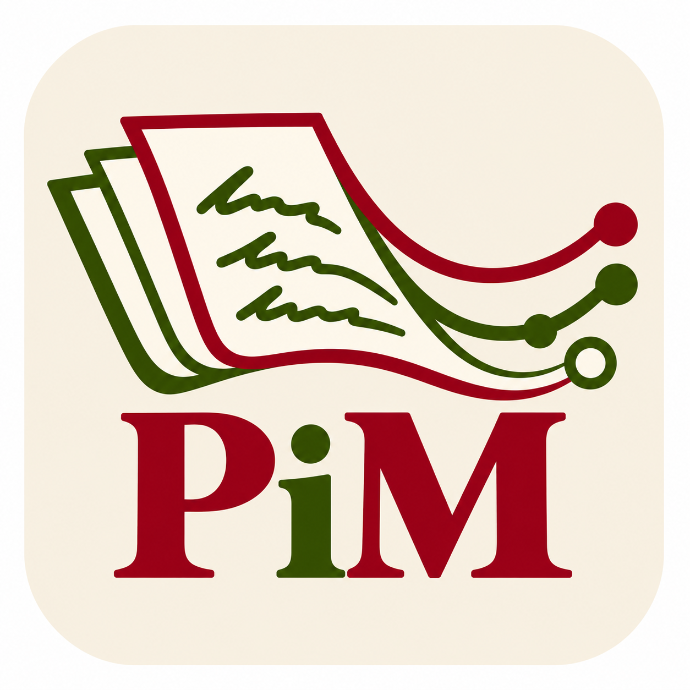
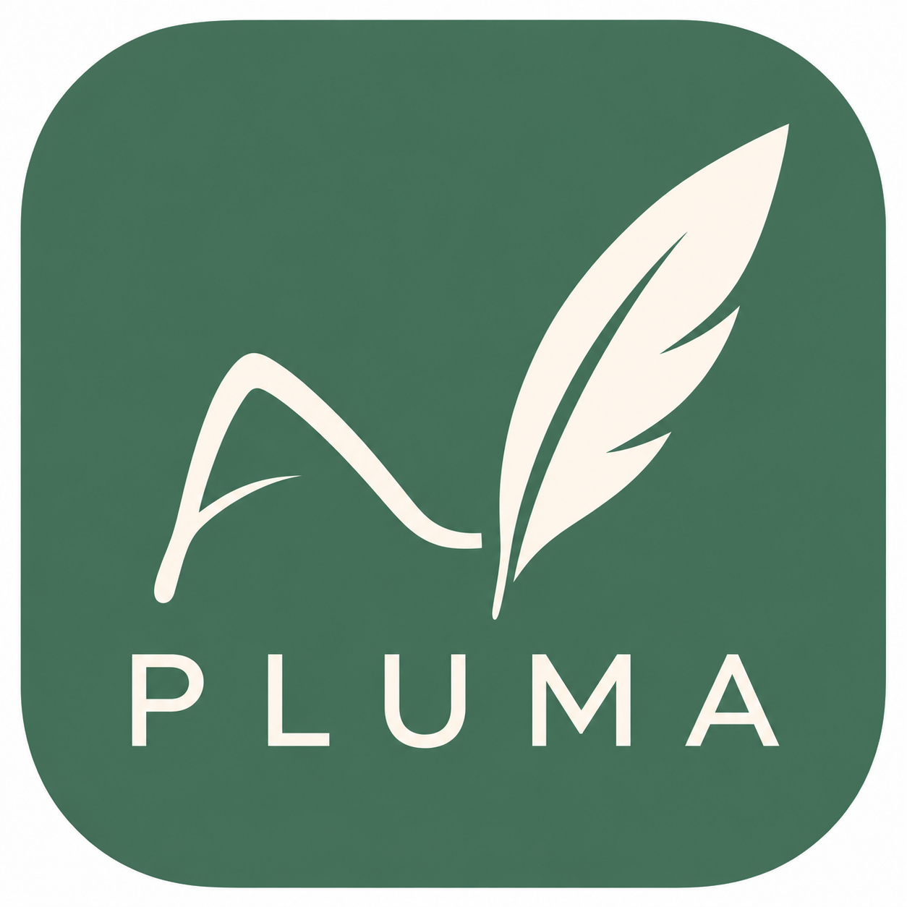
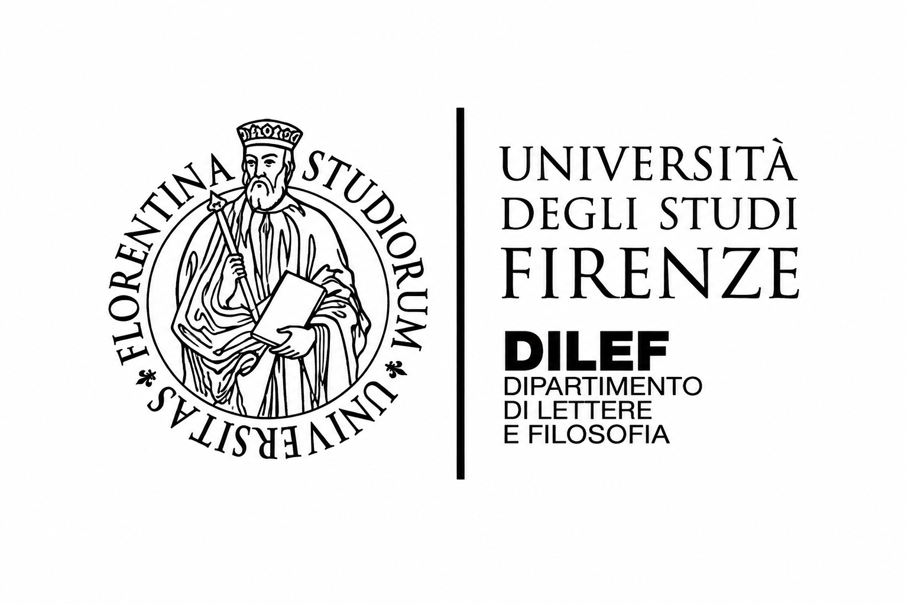
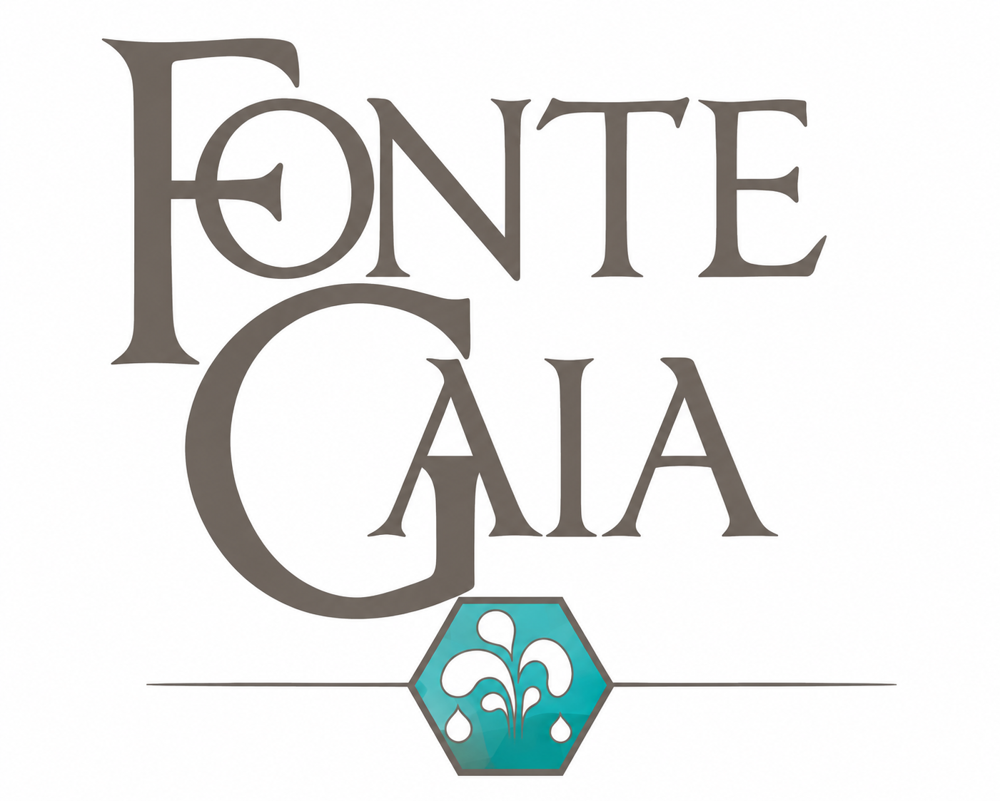
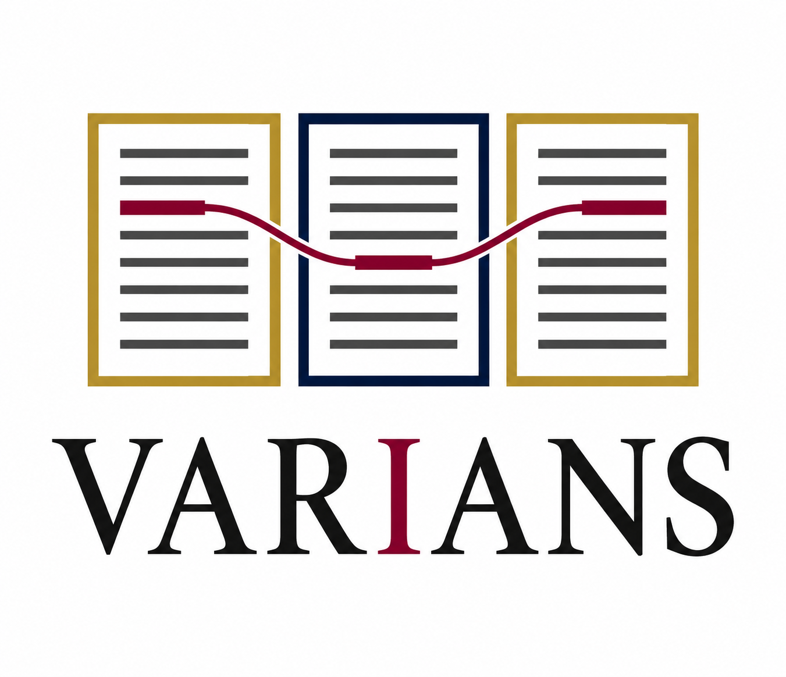

Poems in Motion
A computational study of manuscript and print transmission integrating textual, material, bibliographical, chronological and paratextual evidence.
I study manuscripts as complex objects and build digital tools to read, compare and understand them.
In my spare time, I swap manuscripts and code for a different kind of problem: climbing routes (6c–6c+).
From manuscript collections to tools for reading and comparing texts.

Palaeographic Letterform Understanding and Manuscript Analysis. Letterform-level annotation, computer vision and computational palaeography.

A computational study of manuscript and print transmission integrating textual, material, bibliographical, chronological and paratextual evidence.

Manoscritti italiani del XVII secolo. A research database for the census and study of seventeenth-century Italian manuscripts.

Digital critical edition of Ms. 48 of the Gesuiteide by Filippo Buttari Caccianemici, developed within FonteGaia.

A tool for comparing manuscript witnesses transcribed in ALTO XML. Word alignment, scholarly review of textual variants and TEI export with a critical apparatus.
Articles and forthcoming work
Selected appointments and qualifications.
CESR, Université de Tours · ERC PRIMA. Lead of the Digital Humanities strand; co-responsibility for Literature and Philology.
February–April · Special Collections manuscript research.
Litt&Arts, ELAN · Digital scholarly editions, textual encoding and quality control. Co-coordinator of the DAHU platform, 2023–2024.
XML-TEI encoding, publication of medieval Latin and Renaissance editions, and database structuring.
Università degli Studi di Firenze & CESR, Université de Tours · Joint doctorate. Le manuscrit à l’époque de l’imprimé, entre circulation privée et marché de niche.
Qualification for Maître de conférences, CNU Section 14 (2026). MA in Modern Philology, Università degli Studi di Milano, 110/110 cum laude (2018).
MA courses in textual data, digital data, interoperability and introduction to Digital Humanities.
Digital Humanities / Digital Philology workshop, Norwegian Institute in Rome (2026). XML-TEI encoding, doctoral training, Zurich (2023).
TEI/XML · XPath, XQuery & XSLT · Python · HTR/OCR · OpenCV · Kraken · Data augmentation · FAIR research data.